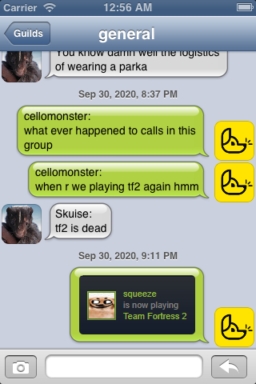
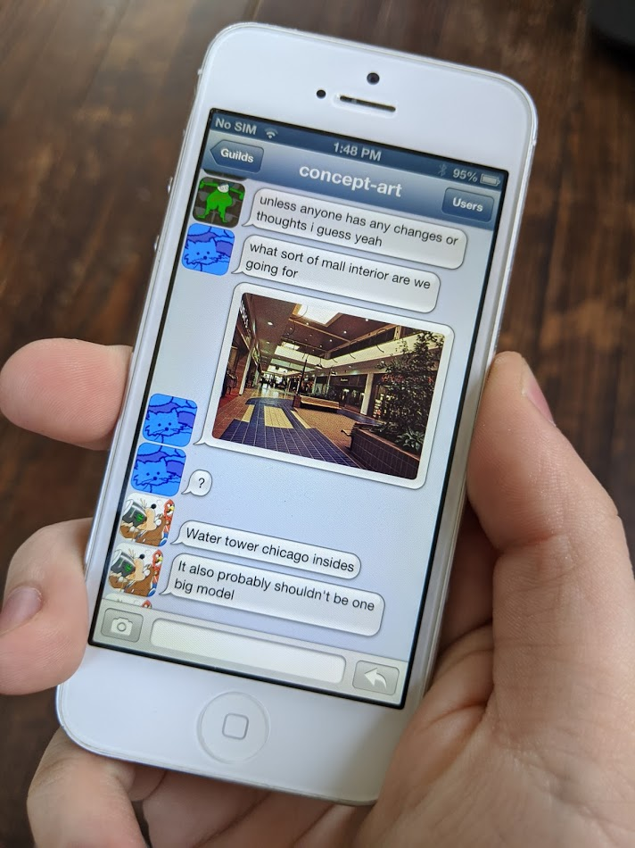

Discord Classic ('raspberry')
What if Discord were around in 2012? This silly project set out to answer just that. It's a Discord client that can run on the old iPod collecting dust in your drawer, demonstrating how you shouldn't need a fancy device to run basic apps. It's a pretty bare-bones proof-of-concept, lacking even basic features like push notifications, starting DMs, and user mentioning, but its functional!
 